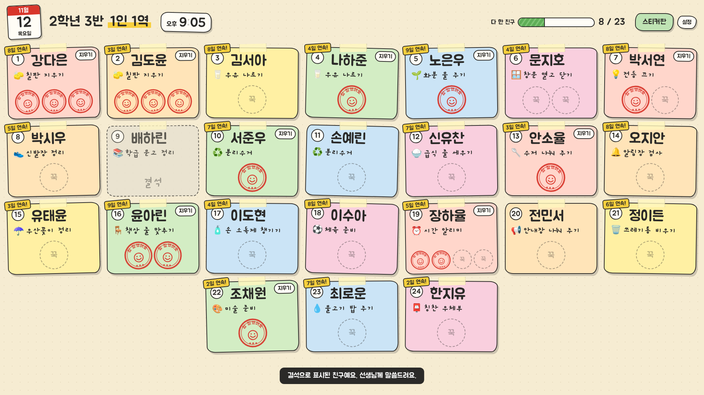
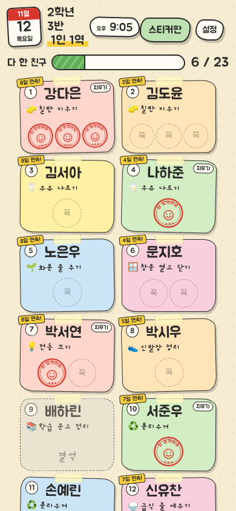

전자칠판에 띄워 두면 학생이 자기 이름표를 눌러 도장을 찍고, 그 기록이 선생님의 구글 스프레드시트에 날짜별로 저장됩니다. 선생님 구글 계정에 직접 설치하며, 약 10분이 걸립니다.


Code.txt, Index.txt)script.google.com 에 들어가 구글 계정으로 로그인합니다.function myFunction() { } 내용을 모두 지웁니다. (Ctrl+A 후 Delete)Code.txt를 메모장으로 열어 전체 선택(Ctrl+A), 복사(Ctrl+C)합니다.Index.html이 생깁니다.Index.txt 내용을 전체 복사해 붙여 넣습니다.Code.txt는 Code.gs에, Index.txt는 Index.html에 넣습니다.설치가 제대로 되었는지 실제 구글 시트로 확인하는 단계입니다. 이때 권한 허용도 함께 합니다.
Code.gs를 누릅니다.점검하면서 구글 드라이브에 "1인 1역 설치 점검용 (지워도 됩니다)" 파일이 하나 생깁니다. 지워도 됩니다.
❌ 표시가 있으면 로그 내용을 그대로 복사해 자료를 나눠 준 선생님께 문의하세요.
| 항목 | 선택 |
|---|---|
| 다음 사용자 인증 정보로 실행 | 나 |
| 액세스 권한이 있는 사용자 | 모든 사용자 |
https://script.google.com/macros/s/…/exec 모양입니다.주소가 길어서 직접 치기 어렵습니다. 메신저나 메일로 자신에게 보내 전자칠판에서 열거나, QR 코드로 만들어 찍으면 편합니다.
전자칠판에서 아래를 차례로 해 보세요. 모두 되면 교실에서 쓸 준비가 끝난 것입니다.
| 하고 싶은 일 | 방법 |
|---|---|
| 도장 찍기 | 학생이 자기 이름표를 누릅니다. 하루 횟수만큼 찍으면 완료입니다. |
| 잘못 찍었을 때 | 이름표 오른쪽 위 지우기를 누르면 하나씩 지워집니다. |
| 이번 주 기록 보기 | 스티커판을 누릅니다. 요일별 스티커, 연속 일수, 이번 달 횟수가 보입니다. |
| 결석한 학생 | 설정 → 오늘 결석에서 이름을 누릅니다. 그날은 통계에서 빠집니다. |
| 공휴일 · 방학 | 설정 → 쉬는 날에 날짜를 넣습니다. 토·일요일은 자동으로 쉽니다. |
| 역할 바꾸기 | 설정 → 친구와 역할에서 고치고 저장하기를 누릅니다. |
| 새 학기에 새로 시작 | 설정 → 시트 · 비밀번호 → 새 스프레드시트 만들어서 바꾸기. 명단은 따라가고 지난 기록은 예전 파일에 남습니다. |
| 소리 끄기 | 설정 → 시트 · 비밀번호 → 효과음. |
| 시트 | 내용 |
|---|---|
| 요약 | 맨 앞 시트. 학생 수, 오늘 다 한 친구, 결석, 이번 주·이번 달 달성률과 학생별 통계. 도장을 찍을 때마다 자동으로 다시 쓰이므로 직접 고치지 않습니다. |
| 기록 | 줄은 학생, 칸은 날짜. ○ 개수가 그날 찍은 도장 수입니다. 직접 고쳐도 됩니다. |
| 명단 | 번호, 이름, 역할, 그림, 하루 횟수. 직접 고쳐도 됩니다. |
| 쉬는날 | 시작, 끝, 이름. |
한 분만 설치하고 웹 앱 URL을 나눠 주면, 다른 선생님은 새 학급 만들기만 하면 됩니다. 이때 스프레드시트는 설치한 선생님의 드라이브에 만들어지므로, 설치한 선생님이 그 파일을 해당 선생님께 공유해 주세요. 학급이 10개를 넘거나 학생 정보를 각자 관리하고 싶다면 선생님마다 따로 설치하는 것을 권합니다.
Code.gs와 Index.html 내용을 새 코드로 통째로 바꾸고 저장합니다."새 배포"를 누르면 주소가 바뀝니다. 반드시 "배포 관리 → 수정"으로 해 주세요. 주소와 기록은 그대로 유지됩니다.
| 증상 | 해결 |
|---|---|
| "Index(이)라는 이름의 HTML 파일을 찾을 수 없습니다" | 왼쪽 파일 목록에 Index.html이 있는지 확인합니다. 있다면 파일을 추가하기 전에 배포한 것이므로 배포 관리 → 수정 → 새 버전으로 다시 배포합니다. |
SyntaxError: Unexpected token '<' | Index.txt 내용을 Code.gs에 붙여 넣은 경우입니다. 2단계를 다시 합니다. |
| "스크립트 함수를 찾을 수 없음: doGet" | Code.gs가 저장되지 않았거나 일부만 들어갔습니다. 전체를 다시 붙여 넣고 저장한 뒤 새 버전으로 배포합니다. |
| 웹 앱 주소에서 "페이지를 찾을 수 없습니다", "파일을 열 수 없습니다" | 브라우저에 구글 계정이 여러 개 로그인되어 있을 때 생깁니다. 시크릿 창에서 열어 보세요. |
| 코드를 고쳤는데 화면이 그대로다 | 새 버전으로 배포하지 않은 경우입니다. 위 "코드를 새 버전으로 바꿀 때"를 따라 합니다. |
| 화면 위에 "인터넷 확인! 다시 저장하는 중" | 인터넷이 끊긴 상태입니다. 도장은 화면에 남아 있고, 연결되면 자동으로 저장됩니다. 그 전에 브라우저를 닫으면 저장되지 않습니다. |
| "스프레드시트를 열 수 없어요" | 연결된 스프레드시트가 삭제되었거나 다른 계정의 파일입니다. 설정 → 시트 · 비밀번호 → 새 스프레드시트 만들어서 바꾸기를 누릅니다. |
| 소리가 나지 않는다 | 전자칠판 음량과 설정의 효과음을 확인합니다. 브라우저는 화면을 한 번 누른 뒤부터 소리를 냅니다. |
| 설정 비밀번호를 잊었다 | 편집기 왼쪽 프로젝트 설정(톱니바퀴) → 스크립트 속성에서 해당 학급(class_…) 항목을 지우고, 앱에서 같은 스프레드시트 주소로 학급을 다시 만듭니다. 기록은 그대로 남습니다. |
| 화면 맨 위의 회색 띠 | 구글이 붙이는 안내("이 애플리케이션은 Google이 아닌 다른 사용자가 만들었습니다")로, 없앨 수 없습니다. |